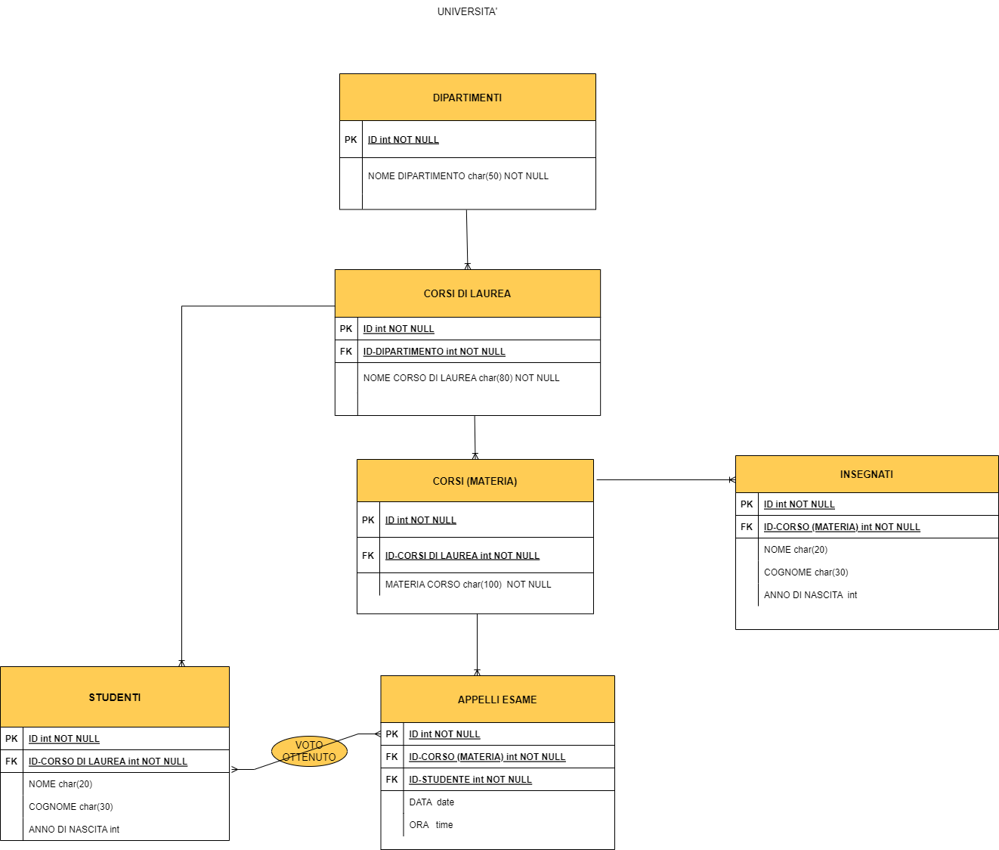

1. Selezionare tutti gli studenti nati nel 1990 (160)
SELECT *
FROM `students`
WHERE date_of_birth LIKE '1990%'
2. Selezionare tutti i corsi che valgono più di 10 crediti (479)
SELECT *
FROM `courses`
WHERE `cfu` > '10'
3. Selezionare tutti gli studenti che hanno più di 30 anni
SELECT *
FROM `students`
WHERE date_of_birth < '1991%' 4. Selezionare tutti i corsi del primo semestre del primo anno di
un qualsiasi
corso di laurea (286)
SELECT *
FROM `courses`
WHERE period = 'I semestre'
AND year = 1;
5. Selezionare tutti gli appelli d'esame che avvengono nel pomeriggio (dopo le 14) del
20/06/2020 (21)
SELECT *
FROM `exams`
WHERE hour > '14%'
AND date = '2020-06-20';
6. Selezionare tutti i corsi di laurea magistrale (38)
SELECT *
FROM `degrees`
WHERE level = 'magistrale'
7. Da quanti dipartimenti è composta l'università? (12)
SELECT COUNT(id)
FROM `departments`
8. Quanti sono gli insegnanti che non hanno un numero di telefono? (50)
SELECT *
FROM `teachers`
WHERE phone IS NULL
QUERY CON GROUP BY
1. Contare quanti iscritti ci sono stati ogni anno
SELECT COUNT(`id`), YEAR (enrolment_date)
FROM `students`
GROUP BY YEAR (enrolment_date)
2. Contare gli insegnanti che hanno l'ufficio nello stesso edificio
SELECT COUNT(id), `office_address`
FROM `teachers`
GROUP BY `office_address`
3. Calcolare la media dei voti di ogni appello d'esame
SELECT exam_id, SUM(vote) / COUNT(exam_id)
FROM `exam_student`
GROUP BY exam_id
4. Contare quanti corsi di laurea ci sono per ogni dipartimento
SELECT department_id, COUNT(id)
FROM `degrees`
GROUP BY department_id
QUERY CON JOIN
1. Selezionare tutti gli studenti iscritti al Corso di Laurea in Economia
SELECT *
FROM `students` JOIN degrees
ON students.degree_id = degrees.id
WHERE degrees.name LIKE 'Corso di Laurea in Economia'
2. Selezionare tutti i Corsi di Laurea del Dipartimento di Neuroscienze
SELECT *
FROM degrees JOIN departments
ON degrees.department_id = departments.id
WHERE departments.name = 'Dipartimento di Neuroscienze'
3. Selezionare tutti i corsi in cui insegna Fulvio Amato (id=44)
SELECT *
FROM `courses` JOIN course_teacher
ON courses.id = course_teacher.course_id
JOIN teachers
ON course_teacher.teacher_id = teachers.id
WHERE teachers.name LIKE 'fulvio'
AND teachers.surname LIKE 'amato'
4. Selezionare tutti gli studenti con i dati relativi al corso di laurea a cui sono iscritti e il
relativo dipartimento, in ordine alfabetico per cognome e nome
SELECT *
FROM `students` JOIN degrees
ON students.degree_id = degrees.id
JOIN departments
ON degrees.department_id = departments.id
ORDER BY students.`name` ASC, `students`.`surname` ASC